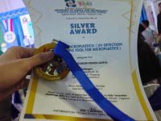
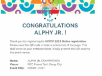

My Story
Back when I was in Grade 7, I was substantially curious about how automated devices work; thus, I searched on the internet in order to have a grasp on this realm of fanciness. I realized that there are distinct devices that are composed of Arduino products, which are chipboards that can hold a set of instructions and require mindful coding knowledge, for an object to work on itself without the alliance of others. I was vastly amazed by these products since they are quite manageable and easy to use, so, I started buying these materials and created several Arduino-based projects. I was able to create an automated light bulb switch through clapping gestures, a temperature-based mini-electric fan, and more. However, this passion was stopped due to its immense need for money in order to generate machines, and I thought that this talent couldn’t be further utilized and that it was only a waste. Not until I reached Grade 8, the years of plot twists and a place of opportunities. This was the year when face-to-face classes were implemented, hence, competitions that weren’t applied due to eLearning emerged this year. One Saturday night when I was in my bed, resting and preparing for another week of classes, I was vastly shocked when my teacher from Grade 7 chatted with me, saying that there was this competition that aims at empathizing and constructing projects that can seek change in the community, and she/he was rooting on me as one of the members of her/his time. No holding back, I swiftly accepted the offer. It was a total shock, I never thought that there would be a chance for me to showcase my capabilities in technology-based fields. Time passes by, and we’re on the stage of prototyping. I noticed that our acknowledged idea needed an automated feature, thus, igniting the flame of my knowledge of stuff that can perform automation, and utilizing the products I have before to integrate in our prototype. Computer science has greatly pushed me on a technology-inclined exposure, shaping the talent that I can pursue and helping me in the future years. Now, with this knowledge, I have achieved these successions :

Silver Medalist in the Kids' Innovation Challenge 4.1
